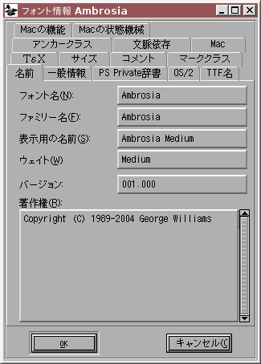
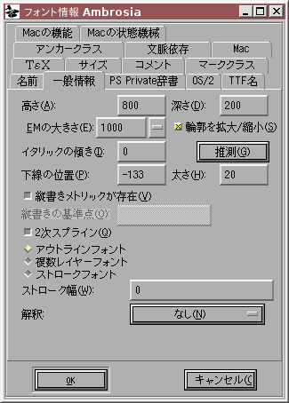
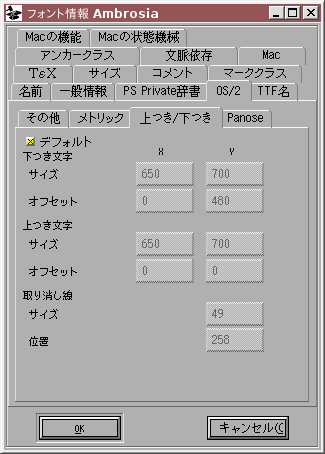
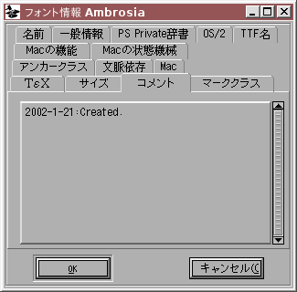

フォント情報

フォント情報ダイアログはすべてのビューから使用可能です。このメニューを使ってフォントに名前をつけたり、その他さまざまな有用な情報の各ビットを設定することができます。CID キー指定フォントでは、事情はより複雑です。各々の CID キー指定フォントは多くのサブフォントから構成されています; このコマンドは現在のサブフォントを操作するためのものであり、フォント全体の集合体の情報にアクセスするためには独立したコマンドがあります——このダイアログと見た目は同じです。このダイアログは多数の別種のサブダイアログから構成されています。
- 名前
- 一般情報
- PostScript ユニーク ID
- PostScript の Private 辞書
- OS/2
- TTF 名
- TeX
- サイズ
- コメント
- マーククラス
- アンカークラス
- 文脈依存
- Mac スタイル情報
- Mac の機能
- Mac 状態機械
名前
PostScript フォントには何種類かの異なる名前がついていますが、そのうちで重要なのは基本的に 2 つです: ファミリー名 (Times など) とフォント名 (ファミリー名に多数の修飾子をつけたもの。例えば Bold Italic Condensed などが後ろにつく) です。フルネームは人間が読む目的でつけられていて、その他の機械が読むための項目と異なります。これは空白を含むことができます (例えば“New Century Schoolbook-Bold Condensed”)。最後に、ウェイト名があります。これらの名前はすべて ASCII で書かなければなりません。この範囲に含まれない文字を含む名前をつけたい場合は、TTF 名のセクションを参照してください。
著作権(R) フィールドは何でも入力したいものを入力できる場所ですが、ここには著作権表示を記入するのがいいでしょう。
ほとんどのフォントでは バージョン フィールドは文字列です (それには最低限の制限があります) が、CID フォントでは浮動小数点数でなければなりません。
これらの名前の多くは TTF 名セクションの英語名に似ています。そのセクションで何も選択しなかった場合には、ここで指定した名前が TTF ファイルのデフォルトとして使用されます。
 一般情報
このサブダイアログには、各種設定のかなり雑多な集まりが含まれます。
高さ (Ascent) と深さ (Descent) は、(現在の定義では) PostScript の概念よりも Macintosh の概念と言うべきです。とはいえ、それらの合計が EM 正方形のサイズとなるという点では PostScript の概念と似ています。PostScript フォントでは、この合計値を 1000 にするという強固な慣習があります。一方、TrueType フォントのほとんどでは 2048 になります (これも慣習ですが、TrueType の仕様書によると、合計が 2 の冪であるとラスタライズが高速に行えると主張しています)。TrueType と Type1 (PostScript) フォントはどちらも 16 ビット整数で表現されるので、高さと深さは 32767 より小さくなければなりません。TrueType では制限がさらにきつく、それらの合計が 16384 より小さくなければなりません。
EM のサイズを変更したときには、すべてのアウトライン (およびカーニング情報) を古い値から新しい値に変更したのと同じ比率で拡大・縮小します。警告: フォントに TrueType 命令が含まれている場合、拡大・縮小を行うと、'cvt ' テーブルは拡大・縮小されないままなので、フォントは壊れるでしょう。
イタリックの傾き(I) は、フォントの傾きを表します。FontForge はいくつかの文字 (例えば“I”) のステムを見ることにより、適切な値の推測を試みることができます。
下線の位置(P) と 太さ(H) は、このフォントを使うプログラムが下線つきテキストをこのフォントで印字しようとするときに、線をどこに引くかに関するヒントを提供します。
作成中のフォントに縦書きメトリックが存在する場合 (一般には、これは CJK フォントをつくっているということですが) [*] 縦書きメトリックが存在(V) チェックボックスがチェックされます。これをチェックすると 縦書きの基準点(O) フィールドが使用可能になり、それによって TrueType または OpenType フォントを出力するときに、縦書きメトリックテーブルが追加されることになります。縦書きの基準点は、デザイン座標系の原点から、縦書きメトリックで用いられる原点への垂直方向のオフセットです。
もし [*] 2次スプライン(Q) がチェックされていると、FontForge は 3 次 Bézier スプラインでなく、2 次 Bézier スプラインをこのフォントに使用します。言い替えれば、FontForge が PostScript (または OpenType) の曲線フォーマットではなく、TrueType 元来のフォーマットで編集を行うということです。FontForge がフォントを出力するとき、内部フォーマットがどちらであっても、そのフォントフォーマットが必要とする方式に変換を行いますので、これが間違って設定されていても問題は起こりません。しかし、これを正しく設定しておくことにより、アウトラインがどのように見えるかについてより明白に把握することができます。個人的経験では、2 次スプラインのほうが自由度が低く (かつ、FontForge の多くのコマンドが動作しない) ため、編集がいっそう困難ですが、TrueType フォントがどう表示されるかを実際に見ることの利点はそれに勝ります。
FontForge を 複数レイヤ編集 機能を有効にしてコンパイルした場合、その機能を使用するためのチェックボックスも表示されます。
その場合、各スプラインが指定した幅をもつ円形のペンで描かれたストロークフォントを作成することもできます。
残念ながらエンコーディングは、フォントのふるまいを理解するのに常に十分なわけではありません。例えば、中国語の表記法に合わせて作られた Unicode フォントは、日本語の表記法に合わせて作られた Unicode フォントとは大きく異なる見かけをもつでしょう (中国語と日本語で大きく異なるグリフが同一の Unicode 文字に割り当てられています)。これを扱うために (および他のいくつかの目的のために) FontForge は「解釈」という概念をもっています。
フォント内に新しいグリフを作成すると、FontForge は現在の名前リスト に基づいて名前を割り当てます。
 PostScript ユニーク ID
PostScript ユニーク ID
注意: Adobe は現在では XUID や UniqueID はどちらも不要だと言っています。
XUID フィールドは、空白で区切られた数値の集まりを括弧でくくったものです。フォントの拡張ユニーク ID はこれを用いて指定することができます。 XUID プリファレンス項目が既に設定されているならば、FontForge はすべての新しいフォントに対して (指定した値の後に各フォントに一意な数値を付け加えて) その値を設定します。Adobe は、フォントが変更されるたびに XUID を毎回変更することを推奨しているので、PostScript フォントを生成するたびごとにフォントの XUID (存在する場合) は 1ずつ加えられます (この増加は CID フォントでは行いません。CID フォントでは XUID の扱いがこの単純なトリックでは対処しきれないほど非常に複雑だからです)。(XUID フィールドは、PostScript フォントでのみ意味があります)。
UniqueID フィールドは XUID と同じ目的をもつ、より以前からの慣習です。このフィールドに値が入っていない場合は、FontForge は許される範囲からランダムな値を選びます。フォントにユニーク ID を設定したくない場合は、この値を -1 にしてください。もしあなたが Adobe に連絡して正式なユニーク ID を割り当てられたならば、このフィールドを使うことができます。それ以外の場合は空白にしておいてください。(XUID フィールドは、PostScript フォントでのみ意味があります)。
PostScript の Private 辞書 — (フォント全体に適用される PostScript のヒント)
 このサブダイアログは、フォントの Private 辞書内のほとんどの項目を表示します。この辞書内にある興味深い事柄のほとんどが、フォント全体に適用されるヒントに関連するものです。それら多数の項目の詳細にここで立ち入るつもりはありません。それを理解するには Adobe の Type1 仕様書を読むのが最善の方法です。
このサブダイアログは、フォントの Private 辞書内のほとんどの項目を表示します。この辞書内にある興味深い事柄のほとんどが、フォント全体に適用されるヒントに関連するものです。それら多数の項目の詳細にここで立ち入るつもりはありません。それを理解するには Adobe の Type1 仕様書を読むのが最善の方法です。
これらの項目が何を意味するか理解するまでは、これらを変更しようとしてはいけません。
右に表示されているのがこのダイアログです。それはリストと編集可能なテキスト領域、一連のボタンを含んでいます。リストは辞書の項目名 (キー) を示し、編集可能領域は現在選択されている項目の値を表示します。ある項目を変更するには、キーを選んでから下のテキストを編集するだけです。
一例を挙げれば、項目 BlueValues はフォント内で重要ないくつかの垂直方向の範囲を指定します。例えばここにベースラインセリフ、x ハイトセリフ、キャップハイトセリフを含めることができます。それは 2 個ずつで対となった数値からなる配列として表されます。対になった数値のうち最初のほうは指定範囲の下端を表し、後ろの数値は上端を表します。ですから右の表示例では、BlueValues は [-20 0 437 457 583 603 623 643] です。
[推測(G)] ボタンが押せる状態のとき、FontForge は現在選択されている項目の妥当な値を推定することが可能だと判断しています。辞書に含まれる 2 つの項目が密接にリンクしていることはしばしばあり、1 つの値を推定するともう 1 つも推定が行われます (FontForge はこの状態に対して警告を発します)。この例では、FontForge が BlueValues を推定することになった場合は、OtherBlues の値の推定も同時に行われます。
[柱状図(H)] ボタンも同様で、フォントのある属性の値を柱状グラフとして表示するダイアログを起動します。その項目の適切な値をフォント作成者が選ぶことができるように用意された機能です。
また、[削除(R)] ボタンを押せば辞書から項目を削除できます。いくつかの項目 (BlueValues など) はすべての Type1 フォントで設定する必要がある項目ですが、それらの項目も削除することができます。FontForge はフォントを出力するために値が必要になったときに妥当な値を単純に推測します。


[追加(A)] ボタンを押すと値を追加することができます。どのキーも最初は 1 個の空白からなる値をもつものとして追加されるので、ほとんどの場合は後から適切な値を入力する必要があるでしょう。[追加(A)] を押すとキーの名前を入力できるダイアログが起動します。(まだ辞書に含まれていない) 既知のキーを含むプルダウンリストから選ぶか、または自分でキーをタイプ入力することができます。
いくつかのキーはヒント以外のものに影響を与えます。項目 lenIV は、フォントが生成されるときの Type1 文字列の先頭に置かれるランダムなパディングが何バイトになるかを制御します。通常はこれは 4 ですが、スペースを節約したい場合 (PFB フォーマットではグリフ 1 個ごとに 4 バイト、PFA では 8 バイト) 他の値を選択できます。UniqueID キーは、フォントのユニーク PostScript ID を表します。ここで値を設定した場合は、FontForge はその値をフォント辞書の UniqueID syー琉度にコピーするだけです。ここで UniqueID を設定しなかった場合、FontForge は自分でランダムな値を生成します (これは TrueType の UniqueID とは異なります。それらは同じ機能ですが、フォーマットが異なります)。
これらの項目は PostScript フォントでのみ意味をもちます。
 OS/2
OS/2
このサブダイアログには、Windows プラットフォームで重要となる設定値が含まれており、それらの設定のほとんどは TrueType および OpenType フォントの‘OS/2’テーブルに含まれています。このタブには、‘OS/2’テーブルに含まれてはいないものの論理的に関連するいくつかの設定も含まれています。
ウェイトクラス(W) は、フォントの太さを表す数値を示します。標準の書体は太さ 400 とし、ボールド体は太さ 700 とするのが通例です。この値は 100 から 900 の間の整数でなければなりません。
項目 幅のクラス(C) では、このフォントの文字幅がどれだけ圧縮されているか、または拡大されているかを表す数値を示すことができます。
PFM ファミリーは、PFM ファイルを出力する時に使用されるもので、フォントをかなり大雑把なカテゴリー (セリフ・サンセリフ・等幅・筆記体・飾り書体) に分類するものです。
フォントを他の文書 (いちばん一般的なのは PDF) に埋め込むことを許可するかどうかを設定することができます。まったく埋め込むことができないように制限をつけることもできますし、文書にフォントを埋め込んで印刷できるように (ただし編集はできないように) することもできますし、文書を編集できるように埋め込むこともできますし、編集可能な文書にフォントを埋め込んで、後で取り出して別のシステムにインストールできるように設定することも可能です。また、文書の制作者が必要なグリフだけを抜き出して、新しくフォントを作る (これにより容量が節約できます) ことを許すか、このフォントを使用する時には常にフォント全体を埋め込まなければならないようにするかを選択することができます。最後に、埋め込みを制限して、フォントのビットマップ版だけを埋め込めるようにも設定できます (TTF と OTF のほかに、CID キー指定 PostScript フォントでも意味があります)。
「ベンダID」とは、フォントの製作者を識別するための 4 文字の ASCII 文字からなるフィールドです。
IBM ファミリー分類はもう一つのフォント分類体系です。
一番下のボタンで、GSUB (または morx) テーブルの照合の順序指定ができます。
これらの項目は TrueType および OpenType フォントでのみ意味を持ちます (ただし、項目 [埋め込み可能(E)] (一般に FSType と呼ばれています) は CID キー指定フォントでも設定することができ、OpenType ラッパに包まれていなくても使用可能です。
 GSUB/morx
GSUB/morx
GSUB/morx
このダイアログではワードプロセッサプログラムによってフォントの機能が実行されるときの順番を設定できます。OpenType または TrueType フォントから読み込んだ場合、元の順序が保存されます。新しく機能を追加するごとにリストの末尾に付け加えられます (これは適切ではないと思われます)。機能名を選択し、上へ(U) ボタンと 下へ(D) ボタンを使ってリスト内の順序を入れ換えることができます。リストの一番上にあるものが最初に実行され、リストの底にあるものが最後に実行されます。
警告: OpenType 仕様書では機能の実行 (実際には照合) は、照合テーブルの中の出現順に並べられると主張していますが、Microsoft は、彼らが最良だと考える順番で機能を適用すると主張しています。ですからフォント内で指定された順序は無視される可能性があります。
 OS/2 メトリック
OS/2 メトリック
Windows の Ascent と Descent フィールドは、OpenType の仕様書であまりきちんと定義されていません。その文書では、Windows の“ANSI”グリフの最大幅を表現することとなっています。もしこの定義を使う場合、非“ANSI”文字は表示の上下が切り詰められてしまいます。表示が切れないようにするにはフォント全体の最大範囲を使用しなければなりません。ところがそれでも常にうまく良くわけではありません。GPOS によって位置が変更されたマークを含む行があると、そのマークが途中で切れることがあるので、Windows の Ascent は、マークの再配置機能 (または任意の他の GPOS の垂直再配置機能) が適用された可能な最大の高さを含んだ高さでなければなりません。
これを計算するのは FontForge にとってあまりに複雑 (かつあまりに定義が曖昧すぎ) なので、FontForge ではその代りに 2 つの選択肢から選べるようにしてあります。
-
WinAscent と WinDescent を直接指定することができます。
“[ ] オフセットを指定”チェックボックスをオフにすれば、あなたが入力した値がそのまま使われます。 -
または、フォントの高さと深さの最大値 (これはフォントを保存するときに FontForge が自動計算します) に加えるオフセットを指定することもできます。もしも、マークから基底文字への位置を指定する機能をまったく含まないならば、このオフセットを 0 にして、“
[*] オフセットを指定”チェックボックスにチェックを入れることをお奨めします。
WinAscent と WinDescent は、どちらも正の値でなければなりません。
組版上の高さ (Typographic Ascent) と 組版上の深さ (Typographic Descent) は Windows プラットフォーム上でのラインスペーシングを表すということになっています。残念ながらこれを実際に使用するアプリケーションはごく稀です (ほとんどのアプリケーションは上に記した WinAscent/WinDescent を使用します)。
伝統的な (ラテン文字の) タイポグラフィにおいては、行間にインテルを入れない時には 1em であるはずであり、Adobe はこのフィールドをそう設定することを推奨しています (2 つを合わせた値は [一般] タブで指定された em サイズと等しくするべきです)。組版上の高さはフォントの高さと同じに設定し、組版上の深さはフォントの深さ (と絶対値が同じ負の値) に設定するべきです。
“[*] オフセットを使用”チェックボックスをセットした時に振舞いが変わる唯一の点は、フォントのバウンディングボックスではなく高さと深さからのオフセットを指定することで、他はだいたい同じです。
組版上の深さは負の値であるべきで、高さは正の値であるべきです。
またデフォルトの行間のアキ量か、行と行の間の送り幅を指定することも可能です。
Mac では同じ概念のために異なるフィールドの組を使用しており、‘OS/2’テーブルではなく‘hhea’テーブルにその値を格納しています。hhea テーブルの高さおよび深さは、(いくつかのアプリケーションにおける) クリッピングと、ラインスペーシングを指定するのに用いられます。それらは (バウンディングボックスの値に基づいた) WinAscent および WinDescent と非常によく似た振舞いをします。また、‘hhea’テーブルには独自の行間アキフィールドが存在します。
フォントに縦書き用メトリックが含まれている場合 (上の [一般情報] を参照)、縦書きにおけるデフォルトの行間のアキ量を設定することができます (縦書きテキストにおける LineGap と等価です)。
 OS/2 下つき/上つき文字
OS/2 テーブルには下つきおよび上つき文字の拡大・縮小と位置指定のための情報も含まれています。
ほとんどのフォントでは実際にこれを制御する必要はありません。[*] デフォルト チェックボックスをチェックしたままにしておけば、FontForge は適切な値を出力時に生成します (特に大きな変更が何もなければ、右記の値を使用します)。これらの値を変更したい場合、チェックボックスのチェックを外せば、テキストフィールドが変更可能になります。
 Panose
Panose
このサブダイアログでは、フォントを 10 種類の分類基準によって記述することができます。これらの各項目が正確に何を意味しているかは用字系毎に異なり、ラテン文字ですらよく分からない所があります。私がしたのは単に TrueType の仕様書にある名前を書き写しただけです。より詳しい情報は HP, AGFA と MS から入手可能です。
[*] デフォルト ダイアログのチェックが入ったままにしておくと、FontForge は適切な値を出力します。チェックを外すと、それらの値を手動で設定することができます。
これらの設定項目は TrueType, OpenType および SVG フォントでのみ有効です
 TTF 名
TTF 名
TrueType (および OpenType) フォントは複数の名前を各種の異なる言語で格納することができます。よってフランスのユーザーは CaslonItlic がフォントメニューで CaslonItalique と表示され、ドイツのユーザは CaslonKursive と表示されるのを見るでしょう。さまざまな異なる言語にカスタマイズすることができる 20 種類ほどの文字列が存在します。ある文字列をカスタマイズしたからといって、他のものもカスタマイズしないとならないわけではありません。(Style 文字列のみをカスタマイズすることがしばしばあります)。
右の図は、ダイアログがあるフォントに含まれる全ての文字列を表示しているところです。これらの文字列は、文字列のタイプ別 (下記の説明の並び順)、言語順 (Unicode 順)、または現在の文字列表示用のロケールを最初に、英語を 2 番目に (なぜなら、一般的にユーザにとってこれらが最も重要だからです)、その後言語名順にソートすることができます。
いくつかの英語の文字列 (Copyright, Family, Styles, Fullname, Version) は常に存在します。それらを明示的に設定していない場合、[名前] タブで設定された等価な PostScript 文字列から (おそらく変更を加えたうえで) コピーされます。これらの文字列は削除できません。また、これらを変更したい場合は、まず PostScript との対応を切り離す必要があります。右の例では PostScript と対応づけられた文字列 (Copyright, Family, Styles) は赤で表示されており、Fullname と Version は対応を切り離したうえで変更されています。
その文字列の言語フィールドをクリックするとその文字列の言語を変更する個とができます——サポートされているすべての言語/ロケールの組合せを表示したポップアップメニューが現れてます。(上に挙げた特別な英語文字列の言語を変更することはできません)。
同様の方法で文字列の型も変更可能ですが、ここでも特別な英語文字列の型は変更できません。
右ボタンで文字列をクリックすると、文字列を変更できる別のポップアップメニューが起動します:
- 文字列を、それと対応する PostScript 文字列から切り離す (それにより変更可能になります)
- 文字列を巻tんに削除する (PostScript に対応づけられた特殊文字列を除く)
-
文字列をより大きなウィンドウで編集する
文字列が十分に短い場合は、文字列値の上で左ボタンをクリックすると文字列を行内で編集できますが、 長い文字列は右ボタンをクリックすれば別のウィンドウで編集できます。
長い文字列は右ボタンをクリックすれば別のウィンドウで編集できます。
新しい文字列を追加したい場合、一番下の <新規(N)> をクリックしてください。標準の言語一覧がポップアップ表示され、新しい文字列が作成できます。 各種の文字列とその意味に関する簡単な説明は以下の通りです:
- 著作権
- ユーザが著作権表示を設定することができます。
- Family
- フォントのファミリー名です。
- スタイル (サブファミリー)
- これは (英語では)“BoldItalicCondensed”のような値となるはずです。これは言語ごとに変更される可能性が最も高い文字列です。
- フルネーム
- ファミリー名とスタイル名を繋げたもの
- UniqueID
- これはフォントを人間に読める形で一意に識別する文字列です。このフォーマットは PostScript の UniqueID と非常に異なるので、何も指定していない場合は (PostScript からコピーするのではなく) 適切な文字列を生成します。
- バージョン
- フォントのバージョン番号を含む文字列。
- Postscript Name
- FontForge は、直接これを設定できないようにしています。これは常に PostScript フォント名から自動的に設定され、このタグをもつデータはフォント内に 1 個しか許されず、文字列は ASCII でなければなりません。
- 商標
- フォントに関する何らかの商標情報を含む文字列。
- 製造元
- フォントを販売する会社の名前。
- デザイナー
- フォントをデザインした人の名前。
- 説明
- フォントとその特性の説明。
- ベンダの URL
- フォントのベンダを指し示す URL。
- フォントのデザイナーを指し示す URL (しばしば e メールアドレス)。
- ライセンス
- フォントが販売されているライセンス条項を記述する文字列。
- ライセンス条件を記述するページを指し示す URL。
- 優先ファミリー名
- これは、1 ファミリーには 4 個のスタイル名しか使用できないという Windows の腐った仕様に対処するためのものです。4 個より多いフォントを含むフォントファミリーは上記のファミリー名は異なることになりますが、希望ファミリー名は同じとなります。これは、ファミリー名と異なる場合にしか指定できません。
- 優先スタイル名
- これは上と同じですが、スタイルを指定する点が異なります。
- Mac 互換フルネーム
- これは Mac の腐った仕様に対処するためのものです。
- サンプルテキスト
- なんでもいいよ。
これらはオリジナルの TrueType 文書で定められていますが、OpenType でも同じように適用されます。
これらの設定は Unicode 符号化方式による Windows プラットホームでの文字列を指定します。
一般に、フォントはアメリカ英語の項目がいちばん完全な文字列セットを含んでいて、スタイル文字列 (だけ) が他の様々な言語に翻訳されているのが一般的です。
| 英語 | Regular | Bold | Demi-Bold | Light | Medium | Book | Black | Italic | Oblique | Condensed | Expanded | Outline |
|---|---|---|---|---|---|---|---|---|---|---|---|---|
| フランス語 | Normal | Gras | Demi-Gras | Maigre | Normal | Extra-Gras | Italique | Oblique | Étroite | Large | Contour | |
| スペイン語 | Normal | Negrita | Fina | Supernegra | Cursiva | Condensada | Ampliada | |||||
| イタリア語 | Normale | Nero | Neretto | Chiaro | Medio | Libro | ExtraNero | Corsivo | Obliquo | Condensato | Allargato | |
| ドイツ語 | Standard | Fett | Halbfett | mager | mittel normal |
Buchschrift | Schwarz | Kursiv | schräg | schmal | breit | Kontur |
| オランダ語 | Regelmatig | Vet | Licht | Extra vet | Cursief | Smal | Breed | |||||
| スウェーデン語 | Mager | Fet | Extrafin | Extrafet | Kursiv | Smal | Bred | |||||
| ノルウェー語 | Vanlig | Halvfet | Mager | Fet | Kursiv | Smal | Sperret | |||||
| デンマーク語 | Normal | Fed | Halvfed | Fin | Medium | Extra fed | Kursiv | Smal | Bred | Kontur | ||
| ハンガリー語 | Normàl | Kövér | FélkövérKövér | Világos | Közepes | Sötétes | Fekete | Do"lt | Döntött | Keskeny | Széles | Kontúros |
| ロシア語 |
жирный | полужирный | светлый | Курсивный | Наклонный | Сжатый | Шиуокий |
(上の表を拡張/訂正するための情報はどんなものでも pfaedit@users.sourceforge.net に知らせていただければ非常に助かります)
ある言語用のスタイル項目を作成すると、FontForge はアメリカ英語のスタイルからその言語に適切な項目に翻訳を行おうと試みます。これは上記の表を理解しますが、他の言語はありませんので常にうまく動くとは限りません。もしアメリカ英語で指定した項目が“BoldItalic”であれば、その後それに相当する文字列を作成したとき、FontForge は、フランス語であれば“GrasItalique”を、ドイツ語であれば“FettKursiv”を、ロシア語であれば“жхрныйсЙвный”を、スペイン語であれば“NigritaCursiva" をデフォルトの文字列として設定します。
これらの名前は TrueType および OpenType フォントでのみ意味をもちます。
 TeX
TeX
これを使うと、TeX のフォントパラメータを記述することが可能です (これは METAFONT ブックの付録 F, 98-100 ページに説明があります)。フォントパラメータには 3 つの異なるタイプがあります。テキストフォント用、数学フォント用と数学拡張フォント用です。後の 2 つは [追加パラメータ] ボタンからアクセス可能です。数学パラメータのデフォルト値はおそらく適切だと思います。数学拡張パラメータのデフォルト値はおそらくデタラメだと思います。
これらの値は TFM ファイルに格納されます (フォントと一緒に TFM ファイルを出力する必要があります)。
 サイズ(S)
サイズ(S)
これを使用するとフォントのデザインサイズや、デザイン範囲を設定することができ、フォントのこのクラスに対する名前を提供することも可能です。
伝統的な活版印刷においては、あるフォントのそれぞれのポイントサイズはすべて微妙に異なっているものでした——概して、小さなポイントサイズではグリフの周りの空白が相対的に多く、グリフ内のステムも広く取られています。これにより、この処理を行わなかった場合よりも小さなポイントサイズでの可読性が向上したのです。その逆に、大きなポイントサイズでは周りの空白は小さくなっていて、これを行わなかった場合は文字の間は離れすぎているように見えるでしょう。
マルチプルマスターフォントは、この問題点を避けるための一方法を提供しています。このダイアログは別の方法を提供します。異なるポイントサイズ向けにデザインされた一連のフォントフェイスがあるとしましょう。
| Ambrosia-Regular-Small | <9pt |
| Ambrosia-Regular-Text | 9-13pt |
| Ambrosia-Regular-Heading | 14-23pt |
| Ambrosia-Regular-Display | >=24pt |
その場合、このダイアログに値を指定して、それぞれのポイントサイズにおいて度のフォントが適切であるかをフォントシステムに指定することができます。そのダイアログでは、フォントの最適サイズ——デザインサイズと、そのフォントが使用可能なポイント数の範囲を表示します。
上の例では、すべての異なるフォントが同じ“スタイル ID”という数値をもっています。この数値は任意の値を撮り、その ID をもつすべてのフォントを結びつけます (つまり、すべてのフォントが同じファミリーに属するようになります)。ただし、Ambrosia-Italic-Text はこれらと異なるスタイル ID をもつでしょう。同じスタイル ID をもつすべてのフォントは同じスタイル名をもつはずです。ここで、フォント名は例えば“Ambrosia-Regular-Heading”というような物ですが、ユーザはこんな複雑な名前に悩まされるべきではありません。ユーザの立場からは“Ambrosia-Regular”という 1 個のフォントがあるだけで、上の 4 つのフォントはどれもその具体例でしかありません。ですから、4 つのフォントのスタイル名はすべて“Regular”にすべきです
 コメント
ここには作成したフォントデータベースの任意のコメントを保存しておくことができます。対応する項目は PostScript フォントや TrueType には一切存在しません。フォントそれ自体の変更履歴をここに格納することを意図していますが、その他の目的にも使用することができます。
フォント内に勝手なコメントを置くことができるフォントフォーマットはいろいろありますが、それを利用するフォーマットはありません。これは第一義的には FontForge 内部で使用するためのものです。コメントは ISO Latin1 で書かなければなりません。
マーククラス
 フォント内に含まれる各種のマークはクラス分けを行うことができます。私の知る限り、これが実際に使用されている例としては、インド系文字の再配置といくつかの文字をスキップして構成される合字を使用可能にするという用途があるだけです。
各マーククラスには名前をつける必要があり、つけた名前は
フォント内に含まれる各種のマークはクラス分けを行うことができます。私の知る限り、これが実際に使用されている例としては、インド系文字の再配置といくつかの文字をスキップして構成される合字を使用可能にするという用途があるだけです。
各マーククラスには名前をつける必要があり、つけた名前はエレメント(L)→グリフ情報(I)...→[合字]→[新規(N)] ダイアログで、その合字の構築時にどのマークが認識され、どれが無視されるかを指定するのに用いることができます。
ここでは新しいクラスを追加したり、古いクラスを編集することができます。
 新しいマーククラスを作成 (または古いクラスを変更) するためのダイアログでは、クラスに名前をつけることができ、そのクラスを構成するグリフのリストを指定する必要があります。
新しいマーククラスを作成 (または古いクラスを変更) するためのダイアログでは、クラスに名前をつけることができ、そのクラスを構成するグリフのリストを指定する必要があります。
アンカークラス
 このサブダイアログでは、フォント内で使用されている アンカークラス を制御することができます。アンカークラスは名前とタグを必要とします。一般的にはデフォルトのタグ‘mark’を使いたいと思うでしょう (どういう場合にそうすべきではないかについては、「概要」の議論を参照してください。
このサブダイアログでは、フォント内で使用されている アンカークラス を制御することができます。アンカークラスは名前とタグを必要とします。一般的にはデフォルトのタグ‘mark’を使いたいと思うでしょう (どういう場合にそうすべきではないかについては、「概要」の議論を参照してください。
ここで新しいクラスの追加、既存のクラスの削除と名前変更ができます。また、それらのクラスを使用するグリフを目で見てアウトライングリフビューを呼び出すこともできます。
 アンカークラスには 3 つの異なる型 (んー、実際には 4 つですが、FontForge はそのうちの 2 つを区別する必要がないんです) があります。マーク→基底文字・マーク→マーク・筆記体の 3 つです。アンカークラスを作成するときには、それがどのタイプになるかを選択しなければなりません。
アンカークラスには 3 つの異なる型 (んー、実際には 4 つですが、FontForge はそのうちの 2 つを区別する必要がないんです) があります。マーク→基底文字・マーク→マーク・筆記体の 3 つです。アンカークラスを作成するときには、それがどのタイプになるかを選択しなければなりません。
- マーク→基底文字 は、マーク (アクセントなどのダイアクリティックマーク) を基底文字または合字に接続させるために使用します。
- マーク→マーク は 2 個のマークを互いに接続させるために (いくつかのマークが同じ文字に適用されるときに、それらの位置が相互に影響されるときに) 使用します。
- 筆記体 は 2 つの文字が接続し、筆記体を書いたかのような幻想を与えます。
OpenType フォントでは一般に、いくつかのアンカークラスがほぼ同じ基底グリフのセットを参照していて、それらの含むマークが重なり合わないときは、それらは 1 個の単位として扱われます。例としては: 同じグリフのセットに接続する 2 つのタイプのマークがあり、片方はグリフの下につき、もう片方は上につくとしましょう。しかし、その場合は両方のクラスにお互いに“まとめ先:”を指定することによって、FontForge に 2 つを連係させるべきでしょう。
FontForge は、この機能がある用字系/言語において必須であることを示すときに、特別な機能タグ‘ RQD’を使用します。このような機能は常に適用されます。
このサブテーブルでは、文脈依存の置換と位置指定機能をフォントに追加したり削除したりすることができます。
文脈依存の機能とは何かについては、こちらの説明を参照してください。
このダイアログでは、[新規(N)] ボタンを押せば新しい文脈依存機能を作成することができます。この操作は 2 段階に分かれていて、最初は標準タグ、スクリプトと言語の組合せ、それとフラグを指定するように要求されます。次の段階では (独立したダイアログで)) その機能の内容を入力するように要求されます。
[編集(E)] ボタンを使うとタグ、スクリプトおよびフラグを変更することができ (これは [新規(N)] の最初の部分に対応しています)、[データを編集...] ボタンで機能の中身を変更することができます。
文脈依存/文脈連鎖依存テーブルは、TrueType (TTF または OTF) 類似のフォントで、OpenType テーブルを出力したときのみに意味があります。
 Mac スタイル情報 と FOND
Mac スタイル情報 と FOND
このサブダイアログでは、作成中のフォントの Mac 用のスタイル情報を設定することができます。通常は FontForge はフォント名 (および多数のその他の手がかり) からスタイルを推測することができますが、名前が標準的でない場合 (またはおそらく、単に FontForge が知らない言語で名前がついている場合) や、その他の場合にも変更したければそのデフォルトの設定に優先してスタイルを設定することができます。
デフォルトの結果に満足している場合、自動 ボタンにチェックが入ったままにしておいてください。変更したい場合はリストボックスの隣のボタンにチェックを入れてください。字幅の縮小 と 字幅の拡大 を同時に選べないことを除いては、好きなようにスタイルを組み合せて選ぶことができます (複数項目を選択する時には Control キーを押すことを忘れないでください)。
注意: スタイルを“Regular”に設定したい場合は、すべてのスタイルを選択しない状態のままにしておきます。
Mac スタイル情報は sfnt (TrueType または OpenType フォントファイル) のヘッダに格納されますが、これがいちばん重要なのは Mac のフォントファミリーを作成するときです。
FOND 名は Mac ファミリーを生成する時にのみ使用されます。これはファミリーレベルの下にあるグループ化のレベルです。これをいつ使用するべきかに関する議論は FAQ を参照してください。
 Mac の機能
Mac の機能
このサブダイアログでは、Mac 方式の機能をフォント内に作成したり削除したりすることができます。ここの設定は、このフォントに限って環境設定ダイアログで指定された設定より優先的に使用されます （例えば、ある機能設定に対してこのフォント限定でより適切な名前をつけることができます)。
Mac 状態機械
このサブダイアログでは、Apple の状態機械をフォントに組み込んだり削除したりすることができます。それらは、 文脈依存/文脈連鎖依存の置換に似ています (前のセクションを参照してください)。
状態機械がどのように表示されるかについては、こちらを参照してください。
これらの状態機械は、Apple オプションをセットして TrueType または OpenType フォントを出力した時のみ意味があります。
参照: